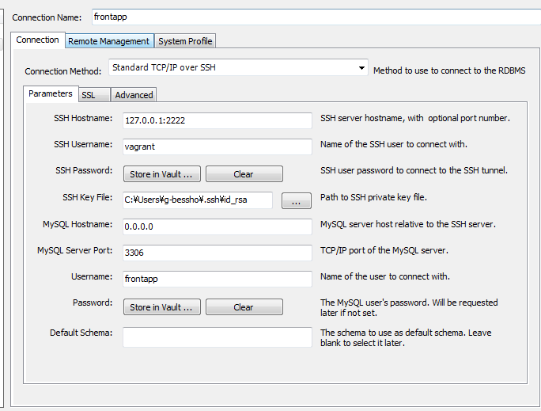

user追加
homesteadでは初期下記userが登録されている
user:homestead
password:secret
今回frontappユーザを追加
vagrant up
vagrant ssh
#mysqlにuser追加
mysql -uhomestead -p
secret
GRANT ALL ON *.* TO frontapp@localhost IDENTIFIED BY 'frontapp';
FLUSH PRIVILEGES;
#db作成
create database frontapp character set utf8;
#.env変更
vi .env
DB_CONNECTION=mysql
DB_HOST=127.0.0.1
DB_PORT=3306
DB_DATABASE=frontapp
DB_USERNAME=frontapp
DB_PASSWORD=frontapp
#database.php変更
※githubのlaravelプロジェクト利用の場合、この手順は不要
'default' => env('DB_CONNECTION', 'mysql'),
'mysql' => [
'driver' => 'mysql',
'host' => env('DB_HOST', '127.0.0.1'),
'port' => env('DB_PORT', '3306'),
'database' => env('DB_DATABASE', 'frontapp'),
'username' => env('DB_USERNAME', 'frontapp'),
'password' => env('DB_PASSWORD', 'frontapp'),
'unix_socket' => env('DB_SOCKET', ''),
'charset' => 'utf8mb4',
'collation' => 'utf8mb4_unicode_ci',
'prefix' => '',
'strict' => true,
'engine' => null,
],
migration
laravelプロジェクトのルートディレクトリで作業
php artisan make:migration create_sample_table
php artisan migrate
でsampleテーブルが作成されていればOK
ホストのMySQL Workbenchからvagrant上のmysqlに接続
| ConnectionMethod | Standard TCP/IP over SSH |
|---|---|
| SSH Hostname | 127.0.0.1:2222 |
| SSH Username | vagrant |
| SSH Password | vagrant |
| SSH Key File | c:/Users/ユーザ/.ssh/id_rsa |
| MySQL Hostname | 0.0.0.0 |
| MySQL ServerPort | 3306 |
| Username | frontapp |
| Password | frontapp |
